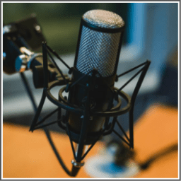

A digital audio file made available on the Internet for downloading to a computer or portable media player, typically available as a series, new instalments of which can be received by subscribers automatically.
People who like to talk and explain the things.
1. In-depth knowledge of any topic you are interested in.
2. Ability to persuade with logical reasoning.
There are 3 important steps for creating a podcast.
1. Prepare a script. Determine what will be the content. Create an outline to keep track of what you are going to discuss or promote.
2. Record audio for your podcast.
3. Upload your podcast on your personal website of iTunes.
1. Sell your podcast. But ensure that the content in the podcast is compelling to convince people to pay for it.
2. Insert a commercial into your podcast and earn money.